20 Logo Concepts — V4
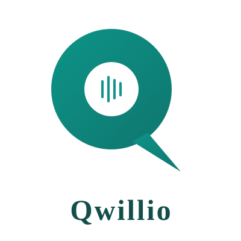
Le Q forme une bulle de dialogue avec des barres audio a l'interieur. Evoque la conversation vocale IA.
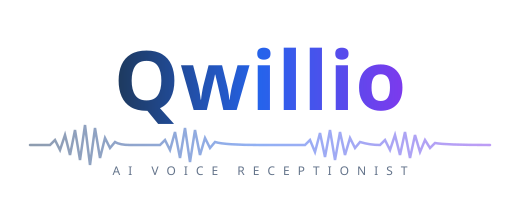
Typographie avec onde audio courant sous le texte. Format horizontal, ideal pour headers.
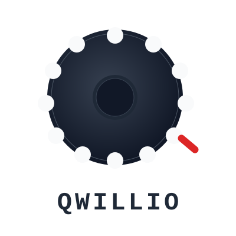
Q inspire d'un cadran rotatif vintage. Heritage telephonique, modernise. Butee rouge comme accent.
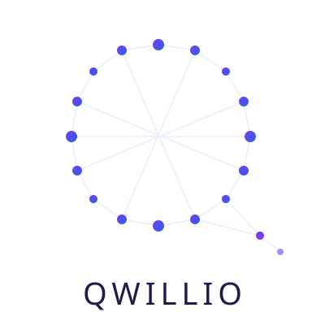
Q forme par des noeuds connectes. Represente l'intelligence artificielle et les reseaux neuronaux.
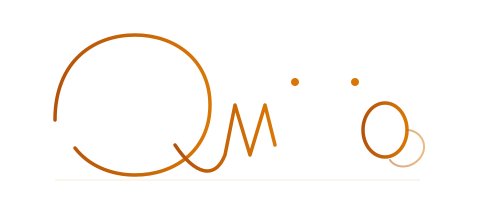
Ecriture elegante a trait unique. Le Q cursif coule naturellement vers les lettres suivantes. Luxueux et raffine.
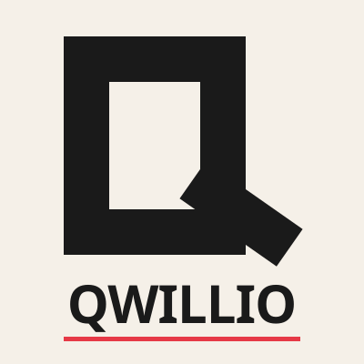
Q massif rectangulaire, brut et industriel. Barre rouge d'accent. Puissant et sans compromis.
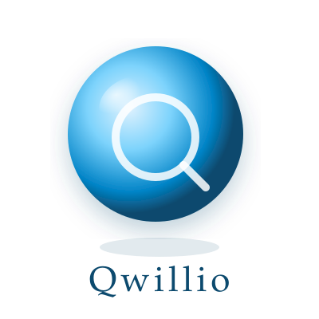
Q flottant dans une sphere de verre bleue avec reflets et ombre. Effet 3D premium.
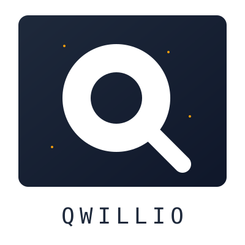
Le Q est revele par l'espace vide dans un rectangle sombre. Points dores comme accents subtils.
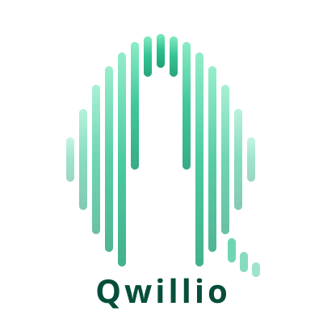
Barres d'equaliseur verticales formant la silhouette d'un Q. Son et frequence visibles.
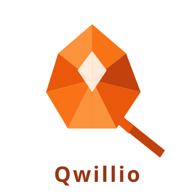
Q en papier plie avec facettes triangulaires et ombres. Artisanal et tangible.
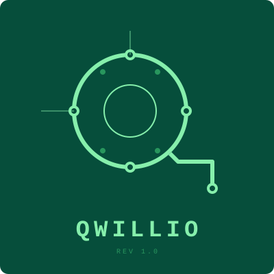
Q trace sur un PCB vert avec pastilles de soudure et vias. Electronique et precision technique.
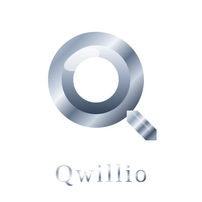
Q en chrome liquide avec reflets speculaires. Effet mercure metallique premium.
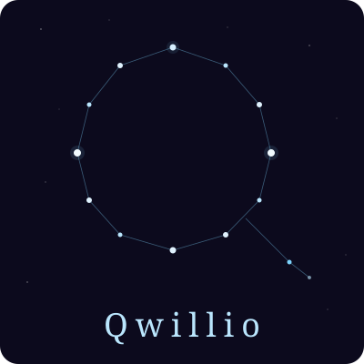
Etoiles connectees formant un Q dans un ciel nocturne. Poetique et infini.
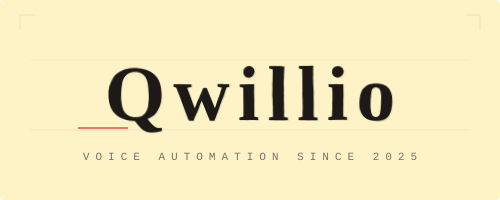
Frappe mecanique sur papier jauni avec effet double-strike. Nostalgie et authenticite.
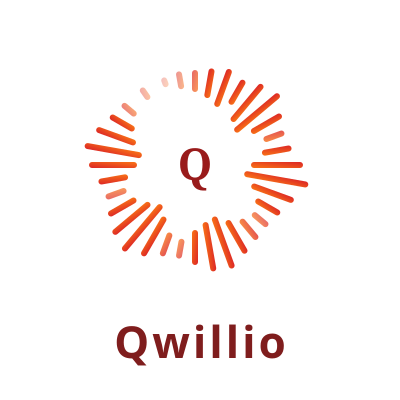
Barres audio disposees en cercle autour d'un Q central. Visualisation sonore dynamique.
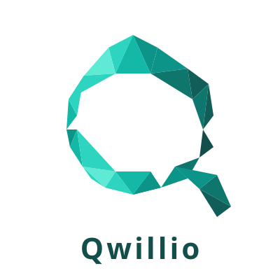
Q en facettes triangulaires comme une pierre precieuse taillée. Geometrie cristalline.
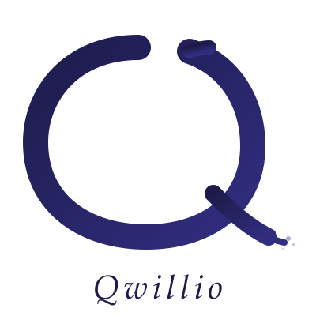
Q en trait de pinceau epais avec eclaboussures d'encre. Expressif et artisanal.
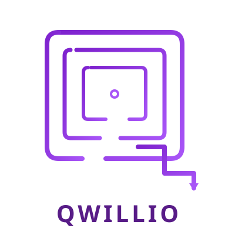
Q forme par des chemins de labyrinthe concentriques avec sortie flechee. Parcours et solution.
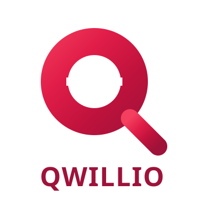
Q en pochoir avec pont de decoupe horizontal et degrade rose-rouge intense. Bold et direct.
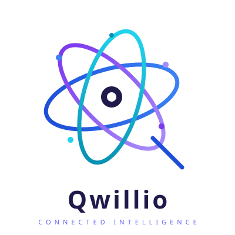
Anneaux orbitaux entrelaces formant un Q avec noeuds aux intersections. Connectivite et ecosysteme.